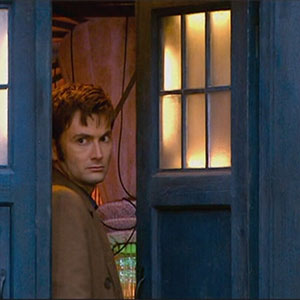

|
|||||||||||||
|
The Tenth DoctorPortrayed by David Tennant The Tenth Doctor is the tenth incarnation of the protagonist of the long-running BBC television science fiction series Doctor Who. He is played by David Tennant, who appears in three series as well as eight specials. As with previous incarnations of the Doctor, the character has also appeared in other Doctor Who multimedia. The Tenth Doctor generally displays a light-hearted, talkative, easy-going, witty, and cheeky manner, but repeatedly demonstrates a vengeful and unforgiving streak as well. This emerged early on when he sends the Sycorax leader (who is attacking him from behind) falling to his death while commenting that, with him, there are "no second chances". In "School Reunion", he acknowledges that he is less merciful than he used to be and has stuck to his "one warning" code, punishing his enemies if they persist in their hostilities. This is demonstrated in "The Runaway Bride" when he drowns the Empress of Racnoss' children and stoically watches on, prompting Donna Noble to declare that he needs somebody to stop him, and in "The Family of Blood" where he gives each Family member an individual and eternal punishment. His strong personal sense of justice makes him quick to anger when he feels it is violated, as in "New Earth" when he learns of the plague farm run by the Sisters of Plenitude, he brings down their entire operation. When Prime Minister Harriet Jones gives an order to destroy the retreating Sycorax ship against his intentions, he brings down her government in six words, "Don't you think she looks tired?", which reaches the press via her assistant's headset. In "The Waters of Mars", he goes so far as to declare himself above the laws of time, although there are catastrophic consequences as a result. This incarnation was very cheerful, charismatic and enthusiastic, often at inappropriate times even in danger, much like his next incarnation. While previous incarnations intentionally flouted social conventions, the tenth incarnation was genuinely shocked when he realized that he was being rude or uncouth. He occasionally got into trouble because of an apparent sense of superiority over those less "clever" than he was. He regularly used his name as a threat, which only rarely worked, despite his apparent expectations. |
||||||||||||